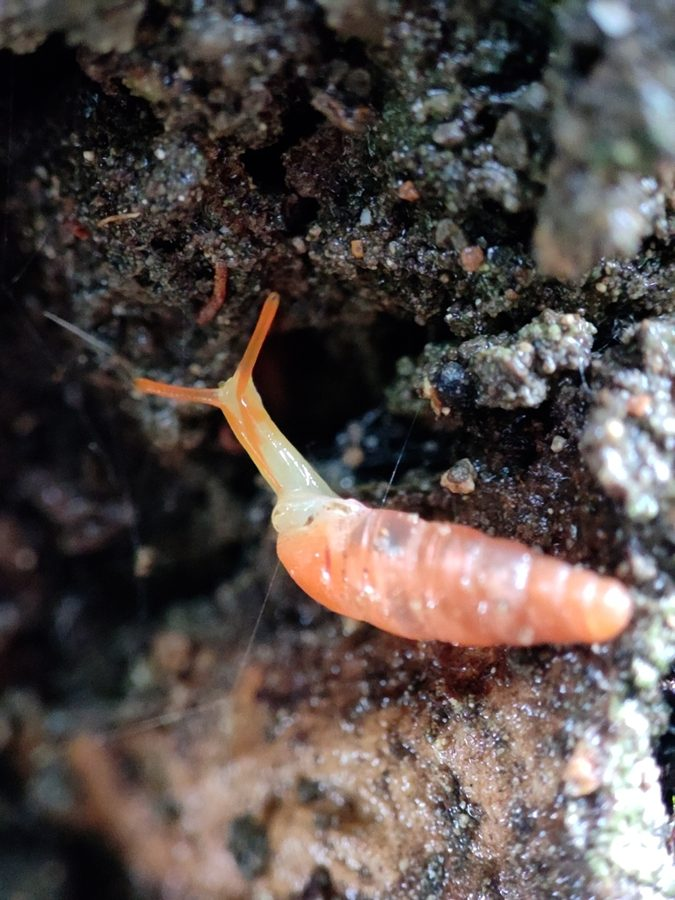

टू-टोन्ड हंटर स्नेलTwo-toned Hunter Snail
Gulella bicolor · Streptaxidae · MOL-0014

- Scientific name वैज्ञानिक नाम
- Gulella bicolor (T.Hutton, 1834)
- Family कुल
- Streptaxidae
- Hindi हिंदी
- टू-टोन्ड हंटर स्नेल
- Local names स्थानीय नाम
- two-toned hunter snail, shikari ghongha, gulella bicolor, carnivorous snail, chota shikari ghongha
- Status here यहाँ की स्थिति
- native
- Movement आवागमन
- Resident, here all year
- Known from कहाँ दर्ज
- Others have published records from the Basti–Ayodhya districts बस्ती–अयोध्या के ज़िलों से दूसरों के प्रकाशित अभिलेख
- IUCN IUCN
- not evaluated
- Review समीक्षा
- not yet reviewed
When to look कब देखें
Expected mainly in June, July, August, September, October, November. मुख्यतः जून, जुलाई, अगस्त, सितंबर, अक्टूबर, नवंबर में अपेक्षित।
Tell it apart from इनसे अलग पहचानें
टू-टोन्ड हंटर स्नेल / Two-toned Hunter Snail
Gulella bicolor (T.Hutton, 1834) — Streptaxidae
टू-टोन्ड हंटर स्नेल — बागीचों, गमलों और नम पत्तों के नीचे रहने वाला एक नन्हा, बेलनाकार और मांसाहारी घोंघा। इसका खोल पारदर्शी हल्का पीला होता है, जबकि इसके अंदर रहने वाला जीव चमकीला नारंगी या गहरा पीला होता है, जिससे इसका दो-रंगा रूप दिखाई देता है। यह अन्य नन्हे शाकाहारी घोंघों का शिकार करके उन्हें खा जाता है, इसलिए इसे 'शिकारी घोंघा' कहा जाता है।
Quick Identification त्वरित पहचान
| Feature | Description |
|---|---|
| Habit | Minute, elongate-cylindrical, active carnivorous terrestrial land snail |
| Two-toned Look | Glassy, translucent pale shell revealing vivid bright orange-yellow body within |
| Aperture | Distorted, rounded aperture heavily armed with four distinct calcareous teeth or folds |
| Shell Shape | Cylindrical, pupiform, smooth or finely ribbed with six to seven whorls |
| Feeding | Strictly predatory, actively trailing and eating subulinid awlsnails |
Field tip: Search among damp decaying leaves or beneath nursery pots during the monsoon; look for tiny cylindrical yellowish shells through which a bright orange animal glows.
हिंदी — कैसे पहचानें: बेलनाकार नन्हा कांच जैसा खोल, अंदर चमकीला नारंगी शरीर, मुंह के अंदर चार छोटे दांत, और अन्य घोंघों का शिकार करना।
Morphology आकारिकी
Adult description: Minute, cylindrical-pupiform terrestrial pulmonate snail. Shell dextral, thin, sub-transparent to glassy yellowish-white, composed of six to seven gradually increasing whorls; apex rounded and obtuse, suture distinctly impressed. Whorls convex, sculptured with very fine, delicate transverse growth striae. Aperture vertical, semi-ovate, constricted by four prominent internal calcareous teeth or lamellae: a strong parietal tooth, a prominent columellar fold, and two palatal teeth, of which the upper is often larger. Peristome thickened, slightly reflexed, white. Living animal vividly coloured, head, foot, and mantle brilliant saffron-yellow to orange-red, contrasting strikingly with the pale shell.
हिंदी: यह एक छोटा बेलनाकार घोंघा है।
Behaviour & Ecology व्यवहार और पारिस्थितिकी
- Carnivorous Tracking: Uses chemical trail-following to track mucus trails left behind by herbivorous prey snails like Allopeas gracile.
- Prey Subjugation: Extends a long slender muscular proboscis armed with razor-sharp radular teeth directly into the shell of its victim, consuming it alive.
- Nocturnal Foraging: Highly active in damp leaf litter during overcast days and humid nights, retreating into moist crevices during dry sunshine.
- Apertural Defence: Strong teeth inside the aperture protect the soft body against attacks from predatory beetle larvae.
हिंदी: यह दूसरे घोंघों की लार के निशान सूंघकर उनका पीछा करता है। फिर उनके खोल के अंदर अपनी लंबी जीभ डालकर उन्हें खा जाता है।
Life Cycle / Phenology जीवन चक्र
- Breeding Season: Mates and reproduces actively during the humid monsoon months from July to October.
- Egg Laying: Deposits tiny, spherical, translucent calcareous eggs singly in damp, dark humus.
- Direct Development: Young hatch with embryonic shells, immediately adopting an active carnivorous hunting lifestyle.
- Aestivation: Plugs its aperture with a thin mucus epiphragm to survive dry summer heat waves inside deep soil cracks.
हिंदी: बरसात में यह नम मिट्टी में नन्हे अंडे देता है। बच्चे पैदा होते ही शिकार करने लगते हैं। गर्मियों में यह खोल का मुंह बंद करके सो जाता है।
Host Plants or Prey आहार
- Specialized Prey: Terrestrial micro-snails, predominantly the graceful awlsnail (Allopeas gracile) and Subulina octona.
- Soil Nematodes: Feeds opportunistically on microscopic nematodes and soft-bodied insect larvae in humus.
- Non-Herbivorous: Strictly carnivorous; never damages garden foliage or agricultural seedling leaves.
हिंदी: यह पूरी तरह मांसाहारी है। यह फसलों को नुकसान पहुंचाने वाले नन्हे घोंघों (Allopeas) और मिट्टी के कीड़ों को खाता है।
Predators / Natural Enemies शत्रु
- Ground Beetles: Predatory carabid beetles track and crush small snails in litter.
- Centipedes: Small geophilomorph and lithobiid centipedes extract snails from shell apertures.
- Birds: Litter-turning common mynas and babblers consume snails uncovered in gardens.
हिंदी: शिकारी भृंग, छोटे कानखजूरे और जमीन पर दाना चुगने वाली मैना इन्हें खा जाती हैं।
Agricultural / Human Relevance कृषि प्रासंगिकता
- Biological Pest Control: Highly beneficial native predator; suppresses populations of invasive awlsnails that feed on greenhouse and garden seedlings.
- Harmless Inhabitant: Completely non-damaging to living crops, fruit trees, or vegetable patches.
- Soil Ecology: Serves as a vital link in transferring invertebrate biomass through soil detrital food webs.
हिंदी: यह किसानों और बागवानों का मित्र है क्योंकि यह सब्जियों के नन्हे पौधों को कुतरने वाले घोंघों को खाकर नष्ट करता है।
Expected Locally स्थानीय रूप से अपेक्षित
Not a field record. Written from published accounts for eastern Uttar Pradesh. No confirmed local sighting yet — if you have seen it, that is what the atlas needs.
अभी तक स्थानीय पुष्टि नहीं। यह विवरण प्रकाशित स्रोतों से है, किसी अवलोकन से नहीं।
Expected in moist leaf litter beneath old mango orchards, decomposing compost piles, and shaded canal borders across Basti and Ayodhya. GBIF holds published records from these districts. To confirm this species for the Atlas, provide a clear photograph showing the cylindrical shell and bright orange animal, along with date, time, and specific location.
Distribution वितरण
Global range: Native to South and Southeast Asia, from India and Sri Lanka across the Indo-Malayan region; widely introduced across tropical islands as a biocontrol agent.
In India: Common across the Gangetic plain, peninsular India, and the Western Ghats in moist leaf litter.
In Uttar Pradesh: Recorded from botanical gardens and rural orchards in Varanasi, Lucknow, and Ayodhya.
In Basti district / eastern UP: Expected in shaded mango orchards, village compost pits, and nursery beds throughout Basti and Ayodhya.
हिंदी: यह शिकारी घोंघा भारत और दक्षिण-पूर्व एशिया का मूल निवासी है। उत्तर प्रदेश के नम बागीचों और नर्सरियों में यह पाया जाता है।
Research Questions शोध प्रश्न
- How many Allopeas gracile prey snails does an adult Gulella bicolor consume per week during the monsoon? / बरसात में एक शिकारी घोंघा एक हफ्ते में कितने शाकाहारी घोंघों को चट कर जाता है?
- What chemical compounds in prey mucus trails trigger predatory tracking behaviour? / शिकार की लार में कौन सा रसायन होता है जिसे सूंघकर यह उसका पीछा करता है?
- What is the structural role of the four apertural teeth in preventing desiccation and predation? / खोल के मुंह पर बने चार दांत सूखे और शिकारियों से बचने में कितने मददगार हैं?
- How does chemical molluscicide application for agricultural snails inadvertently wipe out this beneficial predator? / घोंघा मार दवा डालने से इस लाभकारी शिकारी घोंघे पर क्या बुरा असर पड़ता है?
- Can local populations be managed to provide natural pest control in commercial horticulture nurseries? / क्या नर्सरियों में पौधों की सुरक्षा के लिए इस घोंघे का इस्तेमाल किया जा सकता है?
Similar Species मिलती-जुलती प्रजातियाँ
| Species | How to tell apart | हिंदी |
|---|---|---|
| Allopeas gracile | Much more slender, elongate shell; entirely herbivorous; aperture simple without internal teeth | लंबा पतला खोल, कोई दांत नहीं, शाकाहारी |
| Gulella avellanula | Shell broader, barrel-shaped; distinct arrangement of parietal teeth | अधिक गोल ढोलक जैसा खोल, अलग दांत |
| Pupisoma orcula | Extremely minute, globose-conical shell; brown; lives on tree leaves | नन्हा गोल भूरा खोल, पेड़ों के पत्तों पर रहना |
Field rule: A minute cylindrical glassy shell revealing a vivid bright orange-yellow body within, with four distinct calcareous teeth inside the aperture, identifies Gulella bicolor.
Taxonomy & Classification वर्गीकरण
Original description. Described by Thomas Hutton in 1834 as Pupa bicolor in Journal of the Asiatic Society of Bengal, 3, pp. 81–93.
Subspecies. Monotypic; placed in the predatory family Streptaxidae, subfamily Enneinae.
Family and order placement. Belongs to the family Streptaxidae, order Stylommatophora, class Gastropoda.
IUCN status rationale. Not evaluated by the IUCN; abundant, cosmopolitan in tropical habitats, and ecologically secure.
हिंदी: थॉमस हटन ने 1834 में इसका वैज्ञानिक विवरण दिया था। यह स्ट्रेप्टैक्सिडी कुल का सदस्य है।
Photo Gallery फोटो गैलरी
No photos yet — add field photos to media/species/two_toned_hunter_snail/ and run node scripts/sync_photos.js.
Photos needed आवश्यक फोटो
- [ ] Living snail crawling showing bright orange body through translucent shell (पारदर्शी खोल से चमकता नारंगी शरीर दिखाता घोंघा)
- [ ] High-magnification shot of shell aperture displaying four internal teeth (खोल के मुंह पर बने चार दांतों का क्लोज-अप)
- [ ] Predatory interaction feeding on an awlsnail in leaf litter (दूसरे घोंघे का शिकार करता हुआ शिकारी घोंघा)
References संदर्भ
- Hutton, T. (1834). On the land shells of India. Journal of the Asiatic Society of Bengal, 3, pp. 81–93.
- Blanford, W.T. & Godwin-Austen, H.H. (1908). The Fauna of British India, including Ceylon and Burma: Mollusca: Testacellidae and Zonitidae, p. 19. Taylor and Francis, London.
- Gude, G.K. (1914). The Fauna of British India, including Ceylon and Burma: Mollusca: II. Trochomorphidae-Janellidae, p. 120. Taylor and Francis, London.
- Mitra, S.C., Dey, A. & Ramakrishna (2005). Pictorial Handbook: Indian Land Snails, p. 248. Zoological Survey of India, Kolkata.
- Naggs, F. (1989). Gulella bicolor (Hutton) and its implications for the taxonomy of streptaxids. Journal of Conchology, 33(3), pp. 165–168. doi:10.5962/p.408687
- GBIF Occurrence Data — Gulella bicolor (T.Hutton, 1834), India (2025).
Source file: species/fauna/mollusks/two_toned_hunter_snail.md